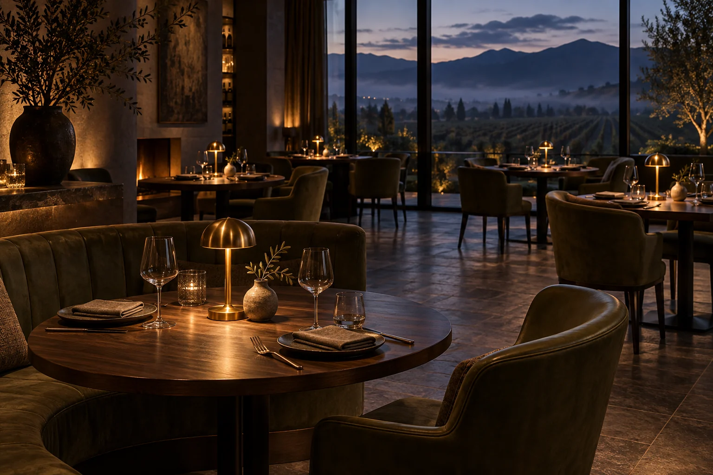

Coal-roasted beetroot
R135Goat’s curd · smoked almond · sorrel
Kitchen & wine / Rooted in the season
Fire-led food, a generous table, and a reason to stay a while.
Take a seatThe way we see it
The season leads. The fire does its work. And the table brings everyone together.
A restaurant concept built around local ingredients, thoughtful cooking and the pleasure of an evening that unfolds in its own time.

An evening to look forward to
Try the reservation experience. A few simple choices, a clear confirmation, and room for a little anticipation.